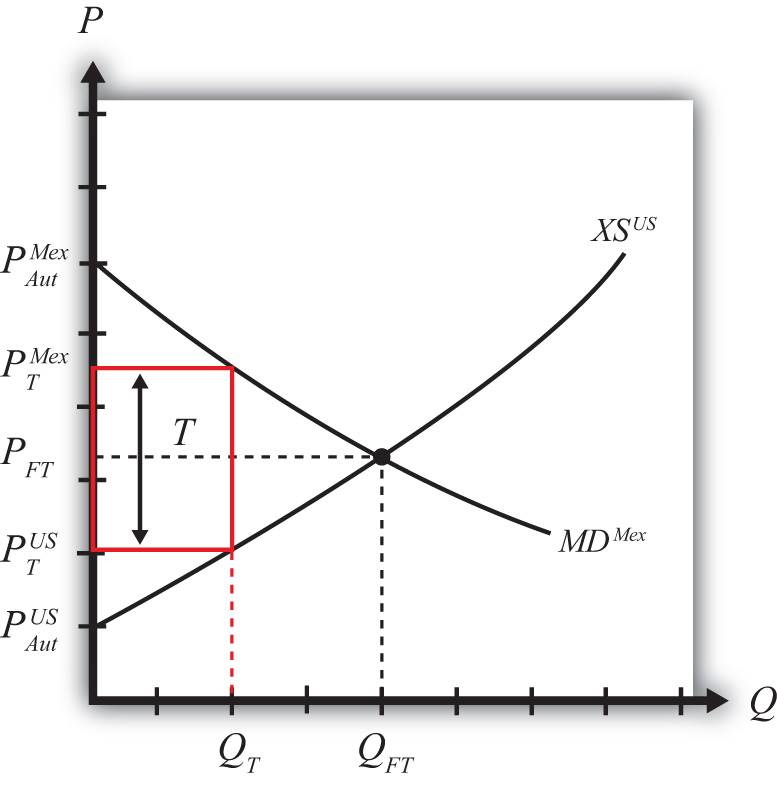

Suppose the United States, the exporting country in free trade, imposes a specific export tax on exports of wheat. A tax on exports will reduce the flow of wheat across the border. It will now cost more to move the product from the United States into Mexico.
As a result, the supply of wheat to the Mexican market will fall, inducing an increase in the price of wheat. Since the United States is assumed to be a large country, the price of all wheat sold in Mexico, both Mexican wheat and U.S. imports, will rise in price. The higher price will reduce Mexico’s import demand.
The reduced wheat supply to Mexico will shift supply back to the U.S. market and induce a reduction in the U.S. price. The lower price will reduce U.S. export supply.
These price effects are identical in direction to the price effects of a tariff, an import quota, and a voluntary export restraint.
A new tax-ridden equilibrium will be reached when the following two conditions are satisfied:
and
where T is the export tax, is the price in Mexico after the tax, and is the price in the United States after the tax.
The first condition represents a price wedge between the final U.S. price and the Mexican price equal to the amount of the export tax. The prices must differ from the tax because U.S. suppliers of wheat must receive the same price for their product regardless of whether the product is sold in the United States or Mexico, and all wheat sold in Mexico must be sold at the same price. Since a tax is collected at the border, the only way for these price equalities within countries to arise is if the price differs across countries by the amount of the tax.
The second condition states that the amount the United States wants to export at its new lower price must be equal to the amount Mexico wants to import at its new higher price. This condition guarantees that world supply of wheat equals world demand for wheat.
The export tax equilibrium is depicted graphically in Figure 7.37 "Depicting an Export Tax Equilibrium: Large Country Case". The Mexican price of wheat rises from PFT to , which reduces its import demand from QFT to QT. The U.S. price of wheat falls from PFT to , which reduces its export supply also from QFT to QT. The difference in the prices between the two markets is equal to the export tax rate T.
Figure 7.37 Depicting an Export Tax Equilibrium: Large Country Case
Notice that there is a unique set of prices that satisfies the equilibrium conditions for every potential export tax that is set. If the tax was set higher than T, the price wedge would rise, causing a further increase in the Mexican price, a further decrease in the U.S. price, and a further reduction in the quantity traded.
Jeopardy Questions. As in the popular television game show, you are given an answer to a question and you must respond with the question. For example, if the answer is “a tax on imports,” then the correct question is “What is a tariff?”